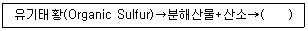
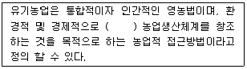
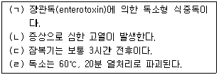

유기농업기사 (2009-05-10 기출문제)
1과목: 재배원론
1. 감자 및 목초의 휴면타파와 발아촉진에 가장 효과적인 호르몬은?
- ABA(abscisic acid)
- GA(gibberellin)
- Ethylene
- Auxin
(정답률: 70%)

2. 경실종자의 발아촉진 방법으로 거리가 먼 것은?
- 종피파상법
- 저온처리
- 진탕처리
- 지베렐린처리
(정답률: 알수없음)
3. 벼 2기작 재배의 설명으로 옳은 것은?
- 벼만 단작하고 답리작을 하지 않는 작부
- 동일 필지에서 년 2회 벼를 재배하는 작부
- 한번 답리작을 하는 작부
- 동일 필지에서 년 2회 답리작을 하는 작부
(정답률: 80%)
4. 식물호르몬의 일반적인 특징이 아닌 것은?
- 식물의 체내에서 생성된다.
- 생성부위와 작용부위가 같다.
- 극미량으로도 결정적인 작용을 한다.
- 형태적 ㆍ 생리적인 특수한 변화를 일으키는 화학물질이다.
(정답률: 80%)
5. 담배를 적심한 후 액아의 발생을 억제할 수 있는 가장 효과적인 화학약제는?
- Fatty alcohol
- B-995
- Amo-1618
- Rh-531
(정답률: 55%)
6. 다음 멀칭용 플라스틱 필름 중에서 지온의 상승 효과가 가장 큰 것은?
- 자외선이 잘 투과되는 것
- 청색광이 잘 투과되는 것
- 적색광이 잘 투과되는 것
- 적외선이 잘 투과되는 것
(정답률: 58%)
7. 토양공기 중에 CO2 농도가 높고 O2가 부족할 때 작물이 흡수하기 가장 곤란한 성분은?
- 질소
- 인산
- 칼륨
- 석회
(정답률: 50%)
8. 관수(冠水)되었을 때 피해가 가장 심한 벼의 생육시기는?
- 유효분얼기
- 유수형성기
- 출수기
- 성숙기
(정답률: 55%)
9. 작물의 습해에 대한 설명으로 틀린 것은?
- 근계가 얕게 발달 하거나, 부정근의 발생이 큰 것이 내습성을 강하게 한다.
- 뿌리의 피층세포가 직렬로 되어 있는 것이 사렬로 되어 있는 것보다 내습성이 강하다.
- 채소류에서 꽃양배추, 토마토, 피망 등은 양상추, 가지에 비하여 내습성이 강한 것으로 알려져 있다
- 춘ㆍ하계 습해는 토양 산소 부족뿐만 아니라 환원성 유해물질 생성에 의해 피해가 더욱 크다
(정답률: 58%)
10. 작물의 초형(plant type)과 군락의 수광태세를 개선하기 위한 재배적 방안으로 적합하지 않은 것은?
- 벼에서 규산과 칼리를 충분히 시용하여 잎을 직립으로 만든다.
- 맥류에서 드릴파 재배보다 광파재배를 하는 것이 수광태세가 좋아지고 지면증발량도 적어진다.
- 재식밀도와 비배관리는 초형과 수광태세에 영향을 미치므로 적절히 관리한다.
- 벼와 콩에서 밀식을 할 때에는 줄 사이를 넓히고, 포기사이를 좁게한다.
(정답률: 54%)
11. 작물의 분화과정에서 첫 번째 단계는?
- 도태와 적응을 통한 순화의 단계
- 유전적 변이의 발생단계
- 유전적인 안정상태를 유지하는 고립단계
- 어떤 생태조건에서 잘 적응하는 단계
(정답률: 100%)
12. 다음 중 수광능률을 높일 수 있는 가장 효과적인 방법은?
- 시비 및 물관리를 잘하여 무기 영양상태를 개선해야 한다.
- 단위 동화능력이 최대가 되도록 환경조건을 개선해야 한다.
- 총엽면적을 최대로 늘릴 수 있도록 재배방법을 개선해야 한다.
- 총엽면적을 알맞은 한도로 조절하여 군락 내부로 광투사를 좋게 하는 방향으로 수광태세를 개선해야 한다.
(정답률: 알수없음)
13. C/N율설의 의의 및 적용과 관련이 적은 것은?
- 내습성 지표
- 작물의 내적 균형 지표
- 화성유도
- 환상박피
(정답률: 알수없음)
14. 작물이 생육하고 있는 포장의 표토를 잘게 쪼아서 부드럽게 하는 것을 중경이라 한다. 중경의 장점이 아닌 것은?
- 토양통기 조장
- 비효 증진
- 풍식 조장
- 잡초제거
(정답률: 80%)
15. 대목의 위치에 따른 접목의 분류방법이 아닌 것은?
- 설접(舌接)
- 고접(高接)
- 근접(根接)
- 복접(腹接)
(정답률: 알수없음)
16. 벼물바구미의 유충은 어디에서 산소를 흡수하여 호흡을 하는가?
- 물 속
- 물 위의 공기
- 벼의 뿌리
- 토양 속
(정답률: 알수없음)
17. 3년생 가지에 결실하는 수종만으로 묶인 것은?
- 사과, 배
- 포도, 감귤
- 복숭아, 자두
- 밤,호두
(정답률: 100%)
18. 다음 중 연작장해가 가장 크게 나타는 작물은?
- 호박
- 딸기
- 가지
- 무
(정답률: 알수없음)
19. 다년생 잡초는?
- 알방동사니
- 금방동사니
- 참방동사니
- 너도방동사니
(정답률: 알수없음)
20. 고온에 의한 작물의 생육 저해 원인이 아닌 것은?
- 유기물의 과잉소모
- 암모니아의 소모
- 철분의 침전
- 증산과다
(정답률: 알수없음)
2과목: 토양비옥도 및 관리
21. 탈질균에 대한 설명으로 옳은 것은?
- 질소원으로서 NH4+ 이온을 사용한다.
- 화학적 또는 광화학적으로 에너지를 획득한다.
- 유기물에 대한 요구도가 높다.
- 호기성 조건하에서 생육하는 미생물이다.
(정답률: 알수없음)
22. 칼리 함량이 많은 장석이 염기물질의 신속한 용탈작용을 받았을 때 가장먼저 생성되는 점토광물은?
- illite
- chlorite
- vermiculite
- kaolinite
(정답률: 알수없음)
23. 토양의 대형동물에 대한 설명으로 옳은 것은?
- 몸의 길이가 5cm 이상인 동물을 말한다.
- 대형동물에는 지네, 선충 등이 있다
- 개미는 농업적으로 가장 중요한 대형동물이다.
- 지렁이는 유기물이 많은 점질토양에서 잘 자라는 대형동물이다
(정답률: 84%)
24. 다음의 반응에 의해 생성되는 최종 이온의 형태는?

- SO42-, OH-
- SO22-, H+
- SO32-, H+
- SO42-, H+
(정답률: 알수없음)
25. 6대 조암광물에 속하지 않는 것은?
- 석영
- 장석
- 휘석
- 석회석
(정답률: 100%)
26. 논토양의 질산(NO3-)이 환원층에서는 주로 어떻게 변화하는가?
- pH값에 따라 산화 또는 환원된다.
- 토양입자에 흡착된다.
- 환원되어 질소가스(N2)로 휘산한다.
- 환원되어 암모늄(NH4+)으로 된다.
(정답률: 64%)
27. 치환산도 측정을 위해 수소이온 침출용으로 어떤 용액을 주로 사용하는가?
- KCl
- NaCl
- H2O
- H2O2
(정답률: 90%)
28. 논토양의 특성으로 옳은 것은?
- 지하수위가 낮고, 담수기간이 길다.
- 담수 환경에서는 호기성 미생물의 활동이 왕성해진다.
- 담수기간이 길어 종종 청회색의 글레이층이 형성된다.
- 미생물의 호흡작용으로 토층 내 산화화합물이 축적된다.
(정답률: 알수없음)
29. 미량원소만으로 나열된 것은?
- Mg, Fe, Ca
- Fe, Cu, Zn
- Ca, Mg, K
- S, Cu, Mg
(정답률: 91%)
30. 토성이 가지는 의의로 가장 거리가 먼 것은?
- 토양의 투수성 정도를 판정하는 지표이다.
- 작물 수량을 결정하는 지표이다.
- 양분 보유력 정도를 판정하는 지표이다.
- 토양의 통기성 정도를 판정하는 지표이다.
(정답률: 알수없음)
31. 공극률이 50%, 입자밀도가 2.60mg∙m-3인 토양이 있다. 용적밀도(mg∙m-3)는?
- 1.10
- 1.20
- 1.30
- 1.40
(정답률: 알수없음)
32. 외부의 온도변화에 가장 민감하게 온도가 변하는 토양은?
- 이탄토
- 양토
- 식토
- 사토
(정답률: 50%)
33. 질산환원 능력이 있는 세균은?
- Achromobacter
- Nitrobacter
- Nitrosomonas
- Mycobacterium
(정답률: 67%)
34. 토양의 유기물 유지방법과 그 필요성을 설명한 것으로 틀린 것은?
- 토양에 가해진 퇴비는 그 전량이 부식으로 될 수 있다.
- 유기물을 시용할 때 밭은 논보다 유기물의 분해가 많다는 것을 고려해야 한다.
- 필요 이상으로 땅을 갈지 말아야 한다.
- 높은 수량을 올릴 때 더 많은 식물유체나 퇴구비가 토양에 환원될 수 있다.
(정답률: 알수없음)
35. 토양 중 존재하는 주요 원소들의환원형태만을 나타낸 것은?
- CH3COOH, NO3-
- Fe2+, Mn2+
- SO32-, Fe3+
- CO2, S
(정답률: 알수없음)
36. 밭이나 산림토양 중 주요 원소의 유실순서로 보아 다음 중 가장 유실되기 쉬운 원소는?
- Na
- Ca
- SiO2
- Al2O3
(정답률: 80%)
37. 질소용 비료인 유박 100kg의 값이 15,000원이라면, 질소 1kg의 값은 대략 얼마인가? (단, 유박의 전질소 함량은 3.5%이다.)
- 150원
- 525원
- 1262원
- 4286원
(정답률: 59%)
38. 다음 중금속 중 최근에 부숙 돈분뇨 액비화 과정과 토양시용에서 그 함량이 높아 문제가 되었던 중금속은?
- 구리
- 카드뮴
- 수은
- 니켈
(정답률: 알수없음)
39. TDR(time domain reflectomerty) 측정에 대한 설명으로 옳은 것은?
- 토양수분함량 측정기이다.
- 토양의 산화환원 전위 측정기이다.
- 토양공기함량 측정기이다.
- 토양의 경도 측정기이다.
(정답률: 알수없음)
40. 탄수화물과 단백질을 함유한 유기물이 초기조건의 밭 토양에서 분해될 때 발생되는 각각의 물질은?
- 탄산가스와 암모니아
- 암모니아와 메탄가스
- 탄산가스와 메탄가스
- 유기산과 물
(정답률: 59%)
3과목: 유기농업개론
41. 유기농업 시설 재배시 태양열 소독의 특징이 아닌 것은?
- 인체와 작물의 해작용이 없다.
- 유기물 투입으로 토양을 개량한다.
- 담수처리로 염류를 제거할 수 없다.
- 잡초방제의 효과도 누릴 수 있다.
(정답률: 67%)
42. 유기축산물 생산 시에 유기양돈에서 생산할 수 있는 육가공제품은?
- 치즈
- 버터
- 햄
- 요쿠르트
(정답률: 100%)
43. 노지재배에 비하여 시설재배 토양의 특성이 아닌것은?
- 염류의 집적
- 토양산도의 저하
- 연작장해 발생
- 토양통기 양호
(정답률: 82%)
44. 유기농업에서 종자를 선정할 때 적합하지 않은 것은?
- 건실한 종자
- 유기종자
- 화학약제로 소독한 종자
- 오염되지 않은 고품질 종자
(정답률: 알수없음)
45. 채소를 연작하면 많이 발생하는 토양전염병으로 작물과 해당병의 연결이 옳은 것은?
- 고추 - 흰가루병
- 가지 - 덩굴쪼김병
- 콩 - 모자이크병
- 감자 - 더뎅이병
(정답률: 80%)
46. 품종의 분류 중 내력에 따른 분류로 옳은 것은?
- 조생종, 중생종, 만생종
- 재래품종, 육성품종, 외래품종
- 육성품종, 종, 아종
- 일반품종, 식용품종, 특수품종
(정답률: 77%)
47. 토양의 질적 수준 및 토양비옥도 유지증진 수단의 실천기술로 거리가 먼 것은?
- 녹비
- 간작
- 연작
- 작물윤작
(정답률: 알수없음)
48. 유기농산물 생산을 위해 사용 가능한 자재인 보르도액에 대한 설명으로 틀린 것은?
- 보르도액의 유효성분은 황산구리와 생석회이다.
- 조제 후 시간이 지나면 살균력이 떨어진다.
- 석회유황합제, 기계유제, 송지합제 등과 혼합하여 사용할 수 있다
- 에스테르제와 같은 알칼리에 의해 분해가 용이한 약제와의 혼합사용은 피한다.
(정답률: 60%)
49. 퇴비 제조과정 중 발열과정에서 세균의 활동이 가장 왕성한 온도 범위는?
- 0~10℃정도
- 30~45℃정도
- 55~75℃정도
- 80~100℃정도
(정답률: 77%)
50. 유기농업에 있어 병충해방제 방법으로 경종적방제법(耕種的防除法)에 속하지 않는 것은?
- 품종의 선택
- 윤작
- 천적
- 혼식
(정답률: 84%)
51. 유기농업에서 가축분뇨로 인한 환경오염을 줄이기 위한 적극적인 대책으로 거리가 먼 것은?
- 액비화사업
- 방류화사업
- 퇴비화사업
- 메탄가스화 사업
(정답률: 알수없음)
52. 답전윤환의 효과로 틀린 것은?
- 벼를 재배하다가 채소를 재배하면 채소의 기지현상이 회피된다.
- 담수상태나 배수상태가 서로 교체되므로 잡초발생이 감소된다.
- 입단화가 되고 건토효과가 진전되며 미량원소 등이 용탈된다.
- 밭 기간 동안에는 논 기간에 비하여 환원성인 유해물질의 생성이 억제된다.
(정답률: 82%)
53. 과습한 재배토양에 대한 조치로서 틀린 방법은?
- 완숙된 유기물을 시용한다.
- 경운시 모래를 혼합한다.
- 이랑을 높인다.
- 환기를 해준다.
(정답률: 알수없음)
54. 퇴비의 검사에 대한 설명으로 틀린 것은?
- 관능적 방법은 발효가 끝난 퇴비의 형태, 색깔, 고유한 냄새를 검사하여 판단하는 것이다.
- 화학적 방법은 탄질률 검사법과 pH검사법이 있다.
- 생물학적 방법은 주로 부숙이 완료된 시료에 지렁이를 넣어 그 행동을 보고 판단하는 것이다
- 물리적 방법은 유해물질에 민감한 어린 묘를 부숙이 완료된 시료에 심은 후 유식물을 물리적으로 분석하여 판단하는 것이다.
(정답률: 91%)
55. 유기농업과 관련하여 유사한 의미로 거론되고 있는 용어가 아닌 것은?
- 자연농업
- 관행농업
- 생태학적 농업
- 친환경농업
(정답률: 100%)
56. 다음은 유기농업에 대한 설명이다. ( )에 들어갈 가장 적합한 것은?

- 다면적
- 생물학적
- 지속적
- 독립적
(정답률: 73%)
57. 제초제를 사용하지 않고 벼를 재배하려면 먼저 잡초의 밀도를 줄여 나가야 한다. 다음 중 잡초 발생을 감소시키는 재배 요인이 아닌 것은?
- 심수관계
- 장간종 벼품종 선택
- 균평(均平)한 써레질
- 소식 재배
(정답률: 알수없음)
58. 유기축산에 사용하는 가축 중에서 자축의 수가 가장 많은 가축은?
- 한우
- 젖소
- 돼지
- 염소
(정답률: 60%)
59. 벼의 무농약 재배에서 발생이 증가하고 있는 키다리 병의 발병 생태에 대한 설명으로 틀린 것은?
- 병원균이 종자에서 월동하여 전염된다.
- 우리나라 전지역에서 발생한다.
- 고온성 병으로 30℃ 이상에서 잘 발생한다.
- 만식재배를 하면 발생이 증가한다.
(정답률: 알수없음)
60. 잡종강세에 대한 설명으로 틀린 것은?
- 잡종강세는 F3에서 가장 크게 발현된다.
- 다른 계통간의 교잡을 시키면 우수한 형질이 나타난다.
- 잡종강세 식물은 외계의 불량조건에 대한 저항력이 강한 경향이 있다.
- 잡종강세 식물은 생장발육이 왕성하다.
(정답률: 알수없음)
4과목: 유기식품 가공.유통론
61. 원가의 3요소가 아닌 것은?
- 재료비
- 노무비
- 감가상각비
- 경비
(정답률: 알수없음)
62. 농산물 전자상거래에 대한 설명으로 틀린 것은?
- 농산물의 표준화 및 등급화가 용이하여 전자상거래가 활성화될 수 있다.
- 품질 보존에 한계가 있으므로 전자상거래가 가능한 품목이 제한되어있다.
- 전자상거래에 필요한 정보의 수집 및 분산 시스템을 구축하여야 한다.
- 소량으로 주문이 이루어질 경우 규모의 비경제성이라는 문제점이 발생한다.
(정답률: 77%)
63. 식품의 열처리 살균방법 중 가장 살균효과가 크고 성분변화가 적은 것은?
- 저온살균법
- 고온순간살균법
- 초고온순간살균법
- 간헐살균법
(정답률: 알수없음)
64. 시간이 지남에 따라 빵이 굳어지며 품질이 저하되는 노화현상을 방지할 수 있는 방법으로 적합하지 않은 것은?
- 미생물의 생육을 억제하기 위해 냉장 보관한다.
- amylose와 complex를 형성하도록 유화제를 첨가한다.
- 탈수제로 작용하는 설탕을 첨가한다.
- 80℃이상에서 수분함량을 15% 이하로 급속히 제거한다.
(정답률: 알수없음)
65. 가열살균에 대한 설명으로 틀린 것은?
- 지방함량이 많아질수록 포자를 죽이는데 장시간이 소요되는 경향이 있다.
- 식품 중 소금의 농도가 증가할수록 포자의 내열성이 점차 줄어드는 경향이 있다.
- 식품의 pH가 알칼리성이 될 수록 저온에서 가열살균하는 것이 좋다.
- 가열시 습열이나 건열에 따라 살균온도와 시간이 차이가 나게 된다.
(정답률: 알수없음)
66. 유기식품에서 말하는 '유기'의 의미는?
- 탄소를 중심으로 한 분자들의 집합체
- 유기농법 생산기준에 맞추어 생산함
- 무기화학의 반대개념으로서의 용어
- 특별히 관리된 토양의 한 종류
(정답률: 80%)
67. 친환경농업 및 유기농업의 필요성과 거리가 먼것은?
- 농업환경의 보전
- 자연생태계 보전
- WT0 대응 및 우리 농산물 지킴
- 물리적 위해요인의 저감화
(정답률: 50%)
68. 정부의 국내산 유기가공식품 유통활성화 정책으로 부적합한 것은?
- 유기식품에 대한 신뢰도 제고
- 유기식품인증제 추진 및 인증기관 지정 등 유기식품 관리체계 정비
- 수입유기식품의 표시 자율화
- 유기식품의 품질향상 지원
(정답률: 알수없음)
69. 유기가공식품을 제조할 때 살균방법으로 사용할 수 없는 것은?
- 방사선 살균
- 자외선 살균
- 마이크로파 살균
- 가열 살균
(정답률: 92%)
70. 식품위해요소중점관리(HACCP)의 7원칙이 아닌 것은?
- 위해요소분석
- 모니터링방법 설정
- 개선조치 설정
- HACCP팀 구성
(정답률: 알수없음)
71. 살모넬라균의 특징이 아닌 것은?
- 그람양성균으로 포자를 형성한다.
- 식중독은 부적절하게 가열한 동물성 단백질 식품이 원인식품이다.
- 발육 최적 온도는 37℃ 정도 이다.
- 유당을 분해할 수 없다.
(정답률: 45%)
72. 유기 소시지 가공에 사용할 수 있는 재료는?
- 합성보존제
- BHA
- 빙수(얼음물)
- 인공발색제
(정답률: 70%)
73. 농산물의 일반적인 유통경로는?
- 중계 - 분산 - 가공
- 중계 - 분산 - 수집
- 수집 - 중계 - 분산
- 분산 - 가공 - 중계
(정답률: 알수없음)
74. 포도상구균 식중독에 대한 설명으로 옳은 것만 고른 것은?

- (ㄱ), (ㄴ)
- (ㄱ), (ㄷ)
- (ㄴ), (ㄷ)
- (ㄴ), (ㄹ)
(정답률: 59%)
75. 식품을 12분 가열하여 세균수를 105CFU/ml에서 102CFU/ml로 낮추었을 때 D값은?
- 2분
- 3분
- 4분
- 5분
(정답률: 60%)
76. 30%의 가용성 고형분을 가진 과실 200g을 1L의 물로 추출하고자 한다. 평형이 이루어졌을 때 과실과 물 혼합액의 가용성 고형분 함량은?
- 5%
- 10%
- 15%
- 20%
(정답률: 42%)
77. 유기식품의 저장, 수송, 취급방법으로 부적절한 것은?
- 유기식품은 비유기식품과 혼합방지
- 비유기식품과 함께 사용하는 구역은 화학 약품으로 살균
- 허용되지 않은 물질과 접촉 방지
- 저장장소는 허용된 자재로 청소
(정답률: 70%)
78. 구토 및 콜레라 증세를 보이며 간장과 신장의 침해를 보이는 맹독성의 버섯독은?
- 뉴린
- 무스카린
- 아마니타톡신
- 콜린
(정답률: 82%)
79. CODEX에 대한 설명으로 틀린 것은?
- Codex Alimentarius Commiwssion의 약어로 식품규격 위원회라고 한다.
- Codex Alimentarius는 식품법(food code)를 뜻한다.
- 세계적으로 통용될 수 있는 식품관련규정을 제정 하고자 1962년에 발족하였다.
- WTO의 SPS/TBT협정으로 설립되었다.
(정답률: 알수없음)
80. 유기식품의 가스충전포장에 일반적으로 사용되는 가스성분중 미생물 생육을 억제하나 고농도 사용시 제품에 이미, 이취를 발생시킬 수 있는 가스성분은?
- 산소
- 질소
- 탄산가스
- 아황산가스
(정답률: 77%)
5과목: 유기농업관련 규정
81. 친환경육성법 시행규칙에서 규정한 유기농산물의 병해충 관리를 위하여 사용할 수 없는 자재는?
- 제충국 제제
- 데리스 제제
- 님(Neem) 제제
- 순수 니코틴
(정답률: 73%)
82. 유기식품의 생산∙가공∙표시∙유통에 관한 Codex 가이드라인의 유기 생산 원칙 중 번식 방법은 유기 축산 원칙을 따르되 다음을 고려하여 정한다. 해당 설명으로 틀린 것은?
- 현지조건과 유기체계하에 사육하기 적합한 품종과 계통을 고른다.
- 종축을 사용한 인공수정이 아닌 자연 교배여야만 한다.
- 수정란 이식기법이나 번식호르몬 처리기법은 사용하지 않는다.
- 유전공학을 사용한 번식기법은 사용하지 않는다.
(정답률: 75%)
83. 친환경농산물을 인증해주는 인증기관으로 지정을 받고자 할 때 관련서류를 누구에게 제출하여야 하는가?
- 농촌진흥청장
- 국립농산물품질관리원장
- 국립식물검역소장
- 국립종자관리소장
(정답률: 100%)
84. 국제유기농업연맹(IFOAM)의 유기농업의 기본 목적이 아닌 것은?
- 장기적으로 토양비옥도를 유지한다.
- 가능한 개방적인 시스템으로 외부유입 자재를 최대한 투입한다.
- 전체적으로 자연환경과의 관계에서 공생∙보호적인 관계를 견지 한다.
- 현대 농업기술이 가져온 환경오염을 회피 한다.
(정답률: 알수없음)
85. 식품의약품안전청장이 고시한 식품 등의 표시기준 중 국내 유기가공식품 제조공장의 관리기준에 적합하지 아니한 사항은?
- 공장주변 등의 해충 방제는 기계적∙물리적 또는 생물적방법에 따라 처리하여야 한다.
- 기계적∙물리적∙생물적방법으로 방제가 충분하지 아니한 경우에는 농약자재 등을 사용할 수 있으나, 이 경우 유기가공식품 및 유기농산물과 직접 접촉되지 아니하여야 한다.
- 제조설비 중 식품과 직접 접촉하는 부분에 대한 세척∙소독 및 살균은 화학약품(식품첨가물은 제외한다.)의 사용을 최소화해야 한다.
- 식품첨가물을 사용한 경우에는 식품첨가물이 제조설비에 잔존하여서는 아니 된다.
(정답률: 80%)
86. 유기식품의 생산∙가공∙표시∙유통에 관한 Codex 가이드라인 부속서1의 허용물질의 포함에 필요한 요건 및 국별 물질목록 작성기준에 관한 설명으로 틀린 것은?
- 특정용도에 해당물질의 사용이 필수불가결하여야 한다.
- 대체물질을 양적으로 질적으로 충분히 구할 수 있다.
- 해당 물질의 사용으로 환경에 나쁜 영향이 없어야 한다.
- 사람의 삶이 질에 부정적인 영향이 없어야 한다
(정답률: 알수없음)
87. 유기식품의 생산∙가공∙표시∙유통에 관한 Codex 가이드라인의 목적으로 거리가 먼 것은?
- 수입 유기식품과 관련하여 각국의 국내 체계가 국제 체계와 상충됨이 없도록 하기 위해 유기식품 관리에 대한 국제 가이드라인을 제공
- 지역 및 지구환경 보호에 기여하기 위한 각국의 유기농업 체계를 유지 증진
- 유기 제품의 생산, 인증, 확인 및 표시에 관한 규정의 조화 유도
- 제품의 생산, 조제, 수송 및 유통의 전 과정을 규격화
(정답률: 77%)
88. 인증품 검사를 위한 시료의 수거 조사를 방해한 경우 1회 위반시 해당 과태료의 부과기준은?
- 100만원의 과태료
- 200만원의 과태료
- 300만원의 과태료
- 500만원의 과태료
(정답률: 알수없음)
89. 회원국 정부와 국제단체가 부속서 목록을 제외한 유기식품의 생산∙가공∙표시∙유통에 관한 Codex 가이드라인을 몇 년마다 재검토할 수 있는가?
- 2년
- 3년
- 4년
- 5년
(정답률: 24%)
90. 친환경농업육성법 시행규칙에서 정한 친환경농산물 인증 기준의 구비요건 중 유기농산물 인증을 받고자 하는 자는 최소 몇 년간의 영농관련 자료를 보관하여야 하는가?
- 2년 이상
- 5년 이상
- 10년 이상
- 보관하지 않아도 된다.
(정답률: 알수없음)
91. 유기식품의 생산∙가공∙표시∙유통에 관한 Codex 가이드라인에 따른 유기생산의 원칙 중 토양의 비옥도를 증진시킬 수 있는 것과 거리가 먼 것은?
- 천근성작물을 다년간 윤작한다.
- 두과작물을 다년간 윤작한다.
- 녹비작물을 다년간 윤작한다.
- 심근성작물을 다년간 윤작한다.
(정답률: 알수없음)
92. 농림수산식품부장관 또는 인증기관이 친환경농산물인증을 취소할 수 있는 경우에 해당하지 않는 것은?
- 거짓이나 그 밖의 부정한 방법으로 인증을 받은 경우
- 일반유통업자가 미인증품에 친환경농산물표시를 하여 판매한 경우
- 정당한 사유 없이 친환경농업육성법 제18조 제1항에 따른 표시 변경∙사용정지 또는 판매금지 등의 명령에 따르지 아니한 경우
- 친환경농업육성법 제18조제1항의 표시 변경의 명령 등에 따른 검사 또는 확인 등의 결과 인증기준에 현저하게 맞지 아니한 경우
(정답률: 46%)
93. 친환경농산물 인증 심사과정의 재배포장 토양검사용 시료채취 방법으로 옳은 것은?
- 토양시료 채취 지점은 최소한 5개소 이상으로 한다.
- 밭토양은 지표로부터 15cm, 논토양은 10cm 깊이 까지의 흙을 각 100g씩 채취한다.
- 토양시료 채취지점은 농업통계조사에서 사용하는 표본구 선정방법에 따라 선정한다.
- 토양시료 채취는 심사원 입회 하에 인증 신청인이 직접 채취한다.
(정답률: 알수없음)
94. 유기축산물 인증기준의 일반원칙에 해당하지 않는 것은?
- 가축의 건강과 복지증진 및 질병예방을 위하여 사육 전기간 동안 적절한 조치를 취하여야 하며, 치료용 동물용의약품을 절대 사용할 수 없다.
- 초식가축은 목초지에 접근할 수 있어야 하고, 그 밖의 가축은 기후와 토양이 허용되는 한 노천구역 에서 자유롭게 방사할 수 있도록 하여야 한다.
- 가축의 생리적 요구에 필요한 적절한 사양관리체계로 스트레스를 최소화하면서 질병예방과 건강 유지를 위한 가축관리를 하여야 한다.
- 가축 사육두수는 해당농가에서의 유기사료 확보능력, 가축의 건강, 영양균형 및 환경영향 등을 고려하여 적절히 정하여야 한다.
(정답률: 85%)
95. 식품산업진흥법 시행규칙에 따른 유기가공식품의 인증기준으로 틀린 것은?
- 유기원료를 상업적으로 조달할 수 없는 경우, 물과 소금을 제외한 제품 중량의 5% 비율 내에서 비유기 원료를 사용할 수 있다
- 유기식품의 가공 및 취급 과정에서 전리 방사선을 사용할 수 없다
- 유기가공식품과 비유기가공식품을 동일한 시간에 동일한 설비로 제조, 가공 할 수 있다
- 유전자변형 농산물 및 유전자변형 농산물 유래의 원료를 사용할 수 없다
(정답률: 알수없음)
96. 식품산업진흥법에 따라 유기가공식품에 사용해야하는 수질기준으로 옳은 것은?
- 농업용수의 수질기준에 적합해야 한다.
- 공업용수의 수질기준에 적합해야 한다.
- 먹는 물의 수질기준에 적합해야 한다.
- 지하수만 사용해야 한다.
(정답률: 알수없음)
97. 유기가공식품 인증신청서에 첨부할 구비서류로만 바르게 짝지어진 것은?
- 경영관련 자료 및 판매계획서
- 원료공급약정서 및 판매계획서
- 유기농산물가공품생산계획서 및 판매계획서
- 식품품목제조보고서, 유기취급계획서, 원료 및 첨가물이 '식품산업진흥법 시행규칙' 제21조제2항에서 정하고 있는 기준에 맞다는 것을 증명하는 서류
(정답률: 31%)
98. 유기식품의 생산 가공 표시 유통에 관한 Codex 가이드라인에 따라 유기상태에 도달한 농지에 비유기가축이 입식 되었을 경우 이로부터 생산된 제품을 유기식품으로 팔 수 있으려면 유기 관리 조건하에서 최소한의 순치기간 동안 사육해야 한다. 해당하는 기준으로 틀린 것은?
- 소의 고기제품 : 12개월
- 산양의 고기제품 : 6개월
- 돼지의 고기제품 : 4개월
- 닭고기의 고기제품 : 관할기관이 정한 수명 전체
(정답률: 80%)
99. 친환경농산물 인증 및 인증기관 지정 관련 수수료에 대한 설명으로 옳은 것은?
- 인증신청비는 1건당 3만원이다.
- 인증기관 재지정 신청비는 1건당 5만원이다.
- 인증심사에 필요한 검사비는 신청비에 포함된다.
- 유기농산물의 인증유효기간 연장신청비는 1건당 2만5천원이다.
(정답률: 알수없음)
100. 친환경농업육성법 제17조의5의 부정행위의 금지 등의 규정에 위반하여 3년 이하의 징역 또는 3천만원 이하의 벌금에 처하게 되는 자가 아닌 것은?
- 인증기관으로 지정을 받지 아니하고 친환경농산물인증을 행한 자
- 인증품이 아닌 농산물에 친환경농산물 표시 또는 이와 유사한 표시를 한 자
- 인증품에 인증품이 아닌 농산물을 혼합하여 판매하거나 판매할 목적으로 보관, 운반 또는 진열한 자
- 친환경농산물표시 또는 이와 유사한 표시를 한 인증품이 아닌 농산물임을 알고 이를 판매하거나 판매할 목적으로 보관, 운반 또는 진열한 자
(정답률: 25%)